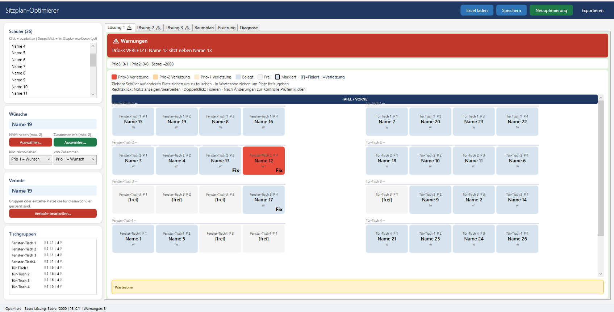
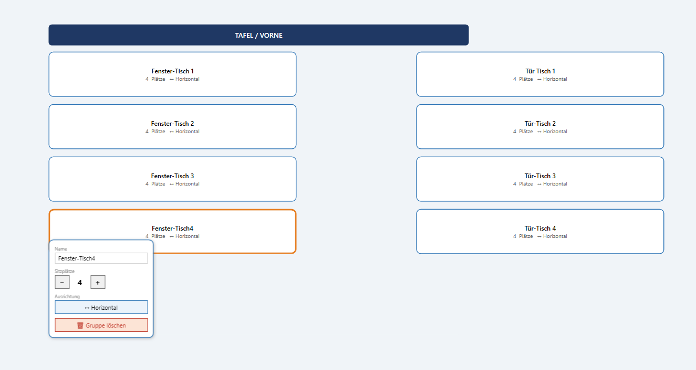
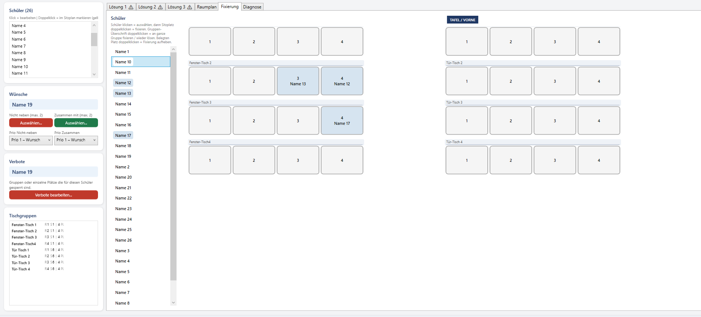
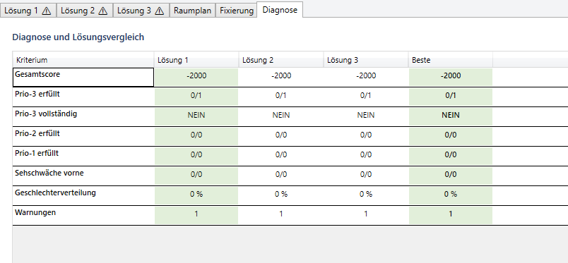
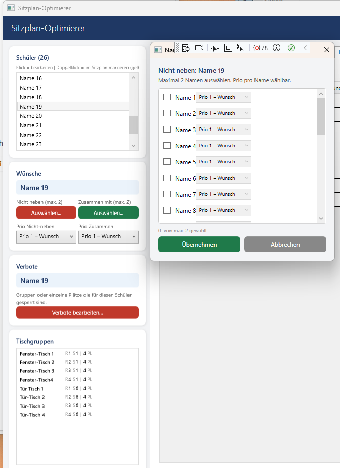

Aus Schülerdaten, Sitzwünschen und dem Raumplan erstellt das Programm automatisch mehrere bewertete Sitzpläne – und lässt sich danach von Hand nachjustieren.
Für Windows 10/11 · eigenständige Datei, keine Installation nötig.
Alle Vorgaben werden erfasst und in eine mathematische Optimierung übersetzt. Zwingende Regeln werden eingehalten, weiche Wünsche so gut wie möglich erfüllt.
Geschlecht, Sehschwäche, Linkshändigkeit und freie Notizen je Schülerin oder Schüler.
Bis zu zwei Partnerwünsche pro Richtung, jeweils mit Priorität 1 bis 3 – von „wenn möglich“ bis „zwingend“.
Einen Schüler an einen konkreten Platz oder an eine ganze Tischgruppe binden.
Einzelne Plätze oder komplette Tischgruppen für bestimmte Schüler ausschließen.
Tischgruppen frei platzieren, Sitzplätze und Ausrichtung einstellen – so entstehen echte Abstände im Raum.
Der Solver erzeugt drei bewertete Lösungen und berücksichtigt dabei auch Sehschwäche vorn und Geschlechterverteilung.
Score, erfüllte Prioritäten und Warnungen aller Lösungen in einer Übersicht gegenübergestellt.
Klassenlisten und Wünsche aus Excel einlesen und fertige Pläne wieder als Datei ausgeben.
Schüler per Ziehen umsetzen und mit „Prüfen“ neu bewerten lassen.
Fünf Ansichten aus dem Programm.





Herunterladen, starten – fertig. Es ist keine Einrichtung erforderlich.